المادة:
النمط:
مستوى بلوم:
أولاً: مستوى الفهم (Understanding) — [إدراك المفاهيم والعلاقات الأساسية]
النسبة المستهدفة: 50% (5 منطق + 5 فلسفة)
سؤال 1
منطق
الترم الأول
فهم
📖 كتاب الوزارة - ترم أول - ص 60 (الكليات الخمس)
توضح شجرة فورفوريوس أن العلاقة بين الجنس والنوع علاقة نسبية متغيرة وليست مطلقة، باستثناء حدين مطلقين، وهما ________.
✓ مفتاح الحل الصحيح: (ب) جنس الأجناس ونوع الأنواع.
التعليل المنطقي من صميم الكتاب (ص 59–60): «العلاقة بين الجنس والنوع نسبية متغيرة وليست مطلقة، فالجنس يعد جنسًا لما تحته من أنواع وفي نفس الوقت هو نوعًا لما فوقه من أجناس» (ص 59). وتحت الشجرة يقرر الكتاب (ص 60): «لاحظ: العلاقة النسبية المتغيرة بين الجنس والنوع لا تنطبق على (جنس الأجناس) ـ (نوع الأنواع)؛ لأنها حدود مطلقة». فقمة الشجرة «جوهر (بمعنى كائن أو شيء حقيقي) (جنس الأجناس)»، وفي قاعدتها الأنواع مثل «إنسان (نوع)».
سؤال متابعة شفهي للمدرس: "لو قال لك طالب إن (حيوان) حد مطلق، كيف تصحح له بالرسم التخطيطي لشجرة فورفوريوس؟" (يكشف هل المعلم يستحضر تدرج الشجرة كما في الكتاب ص 60: جوهر (جنس الأجناس) ← جماد / حي (جنس ونوع) ← نبات / حيوان (جنس ونوع) ← إنسان (نوع) / قط وفأر وفيل (كل منها نوع)؛ فالحيوان نوع لما فوقه (حي) وجنس لما تحته، فهو ليس حداً مطلقاً).
📷 لقطة شاشة الصفحة 60 من كتاب الوزارة (ترم أول) — شجرة فورفوريوس وملاحظة الحدود المطلقة:
(اضغط على الصورة للتكبير)
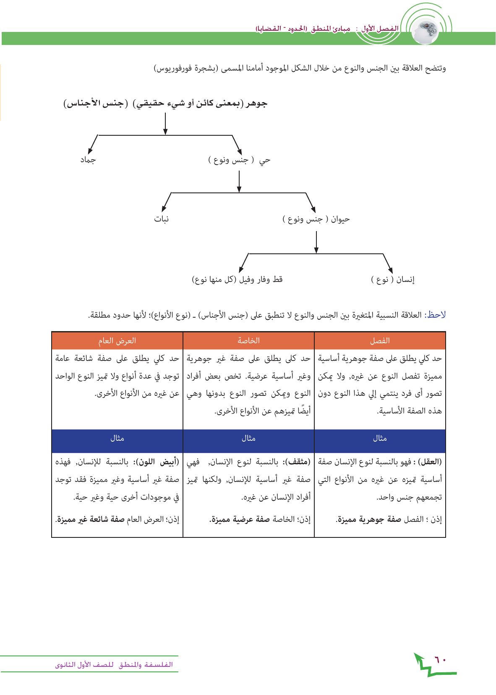
سؤال 2
منطق
الترم الأول
فهم
📖 كتاب الوزارة - ترم أول - ص 54 (الحدود المنطقية)
تصف القواعد المنطقية دور أداة السلب داخل القضية؛ حيث يترتب على استخدام أداة السلب (غير) أنها ________.
✓ مفتاح الحل الصحيح: (ب) تسلب الحد وتُبقي القضية موجبة.
التعليل المنطقي من صميم الكتاب (ص 54): «واستخدام أداة السلب (لا، واللا، وغير) للتعبير عن الحد السالب يجعل أداة السلب جزءًا من الحد؛ (اللا أمين). بينما استخدام (ليس) يفيد انفصال الحد المنطقي عن الحد الآخر في الجملة أو القضية، وبالتالي لا تعد (ليس) جزءًا من الحد مثل قولنا: «الأسد ليس إنسانًا»». ولذلك يقرر الكتاب (ص 77 س5): «غير تسلب الحد ولا تسلب القضية»؛ فقولنا «سقراط غير عادل» قضية موجبة محمولها (غير عادل) غير مستغرق.
سؤال متابعة شفهي للمدرس: "ما حكم استغراق المحمول في القضية: (كل الطلاب غير راسبين)؟" (المعلم المتمكن سيقول فوراً: غير مستغرق؛ لأن القضية كلية موجبة وليست سالبة).
📷 لقطة شاشة الصفحة 54 من كتاب الوزارة (ترم أول) — قاعدة أدوات السلب (غير / ليس):
(اضغط على الصورة للتكبير)
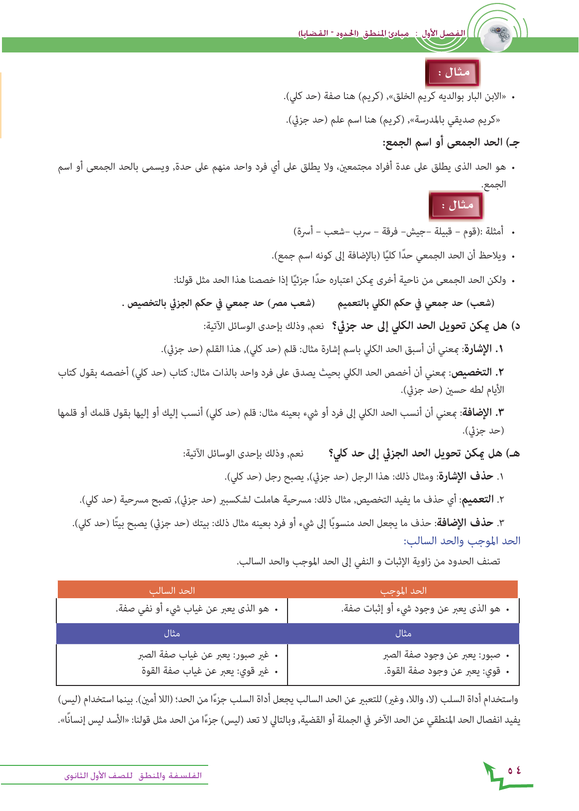
سؤال 3
منطق
الترم الثاني
فهم
📖 كتاب الوزارة - ترم ثاني - ص 51 (النسق الرياضي)
يعد استخدام اللامعرفات أمراً ضرورياً وحتمياً في بناء النسق الرياضي الاستنباطي؛ بهدف تجنب الوقوع في عيب ________.
✓ مفتاح الحل الصحيح: (ب) التسلسل بالتعريفات إلى ما لا نهاية.
التعليل المنطقي من صميم الكتاب (ص 51): اللامعرفات «هي ألفاظ واضحة بذاتها يتركها العالم بدون تعريف؛ لأنها واضحة بذاتها. ومن ثم يستخدمها في تعريف مفاهيم أخرى حتى لا تمتد التعريفات إلى ما لا نهاية، وبذلك فهي تعد أساس التعريفات الرياضية».
سؤال متابعة شفهي للمدرس: "اذكر مثالين للامعرفات استُخدما في تعريف النقطة والخط عند إقليدس؟" (الإجابة: الجزء في تعريف النقطة، والطول والعرض في تعريف الخط).
📷 لقطة شاشة الصفحة 51 من كتاب الوزارة (ترم ثاني) — المعرفات واللامعرفات:
(اضغط على الصورة للتكبير)
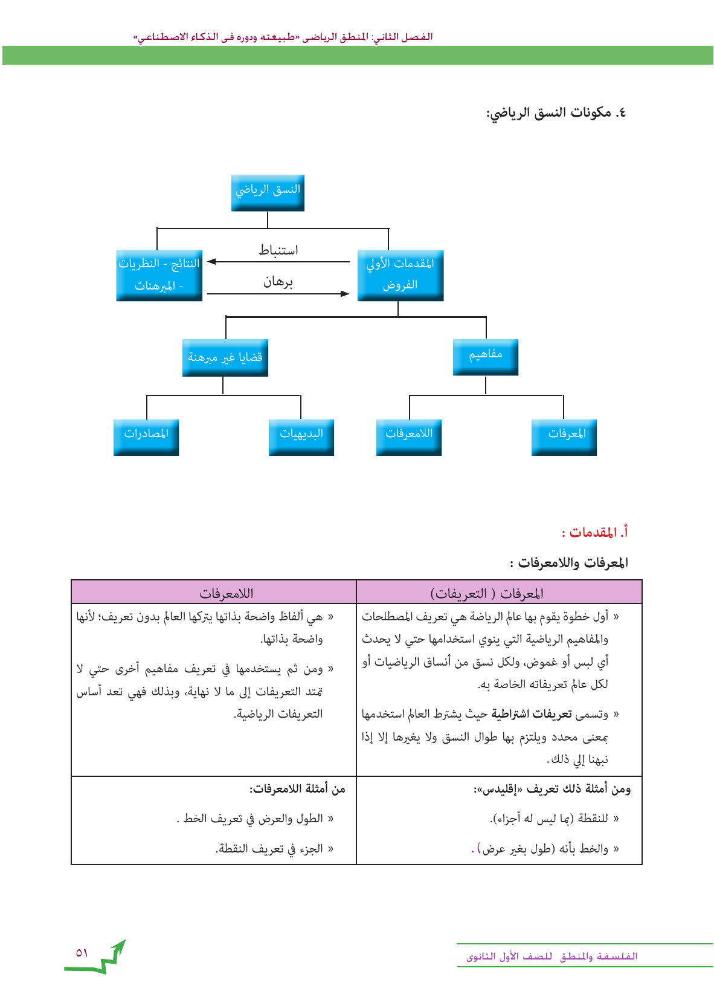
سؤال 4
منطق
الترم الثاني
فهم
📖 كتاب الوزارة - ترم ثاني - ص 56 (المنطق والذكاء الاصطناعي)
توضح تطبيقات الذكاء الاصطناعي عجز المنطق ثنائي القيم عن تمثيل لغة التخاطب الطبيعية؛ بسبب اعتماده على ________.
✓ مفتاح الحل الصحيح: (ب) الفصل الحاسم بين الصدق والكذب.
التعليل المنطقي من صميم الكتاب (ص 56): «وبدأت علاقة المنطق المرن بالذكاء الاصطناعي عندما وجد علماء الحاسوب والذكاء الاصطناعي أن المنطق (ثنائي القيم) الذي يحتمل قيمتين (صادق وكاذب) فقط لم تعد كافيتين للتعامل مع القضايا التي تشتمل على درجات متفاوتة من الحكم لذا اتجهوا إلى المنطق المرن (متعدد القيم)»، وهو منطق «يدعي أصحابه قدرته على تمثيل المعاني الغامضة في جمل اللغة الطبيعية والتعبير عنها بالرموز».
سؤال متابعة شفهي للمدرس: "ما مثال المنطق المرن المذكور في كتاب الوزارة؟ ومن العالم الذي أشار إلى أن أغلب المفاهيم التي نستخدمها في حياتنا اليومية ليست دقيقة؟" (الإجابة من الكتاب: «التشخيص الطبي في السابق كان يستخدم قيمتين فقط إما (وجود المرض أو عدم وجوده) أما الآن أصبح يحدد بدقة نسبة وجود المرض بالأرقام» ص 56، و(لطفي زادة) في ص 57 س1: «أشار (لطفي زادة) إلى أن أغلب المفاهيم التي نستخدمها في حياتنا اليومية ليست دقيقة وليست لها حدود واضحة»).
📷 لقطة شاشة الصفحة 56 من كتاب الوزارة (ترم ثاني) — المنطق غير الرتيب والمنطق المرن:
(اضغط على الصورة للتكبير)
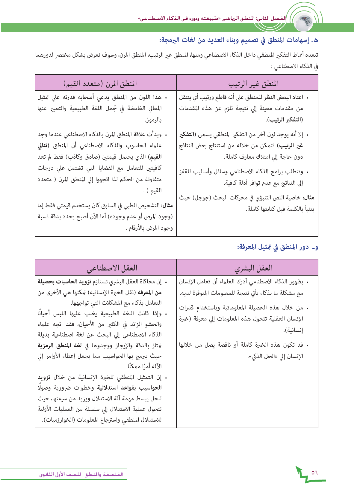
سؤال 5
منطق
الترم الأول
فهم
📖 كتاب الوزارة - ترم أول - ص 85 (مربع أرسطو: التقابل بالتناقض)
تصف القواعد المنطقية لمربع التقابل أن أكمل أنواع التقابل بين القضايا يتحقق في علاقة ________.
✓ مفتاح الحل الصحيح: (ب) التناقض لاختلافهما كماً وكيفاً.
التعليل المنطقي من صميم الكتاب (ص 85): التقابل بالتناقض «يقع بين القضايا المختلفة في الكم والكيف معًا، أي بين الكلية الموجبة (ك.م) والجزئية السالبة (ج.س) أو الكلية السالبة (ك.س) والجزئية الموجبة (ج.م) وهو أكمل أنواع التقابل لوجوده بين قضايا تختلف في الكم والكيف معًا ولا توجد به أحكام وسط (مجهولة الحكم)». وحكمه: «لا تصدقان معًا، ولا تكذبان معًا».
سؤال متابعة شفهي للمدرس: "متى نحصل على قضية (مجهولة الحكم) في مربع أرسطو؟" (الإجابة من الكتاب ص 83–84: في التضاد «إذا كذبت إحداهما فالأخرى ... مجهولة»، وفي الدخول تحت التضاد «إذا صدقت إحداهما فتكون الأخرى مجهولة الحكم»، وفي التداخل «إذا كذبت الكلية كانت الجزئية المتداخلة معها مجهولة الحكم» و«إذا صدقت الجزئية كانت الكلية المقابلة لها بالتداخل مجهولة الحكم»).
📷 لقطة شاشة الصفحة 85 من كتاب الوزارة (ترم أول) — التقابل بالتناقض وأحكامه:
(اضغط على الصورة للتكبير)
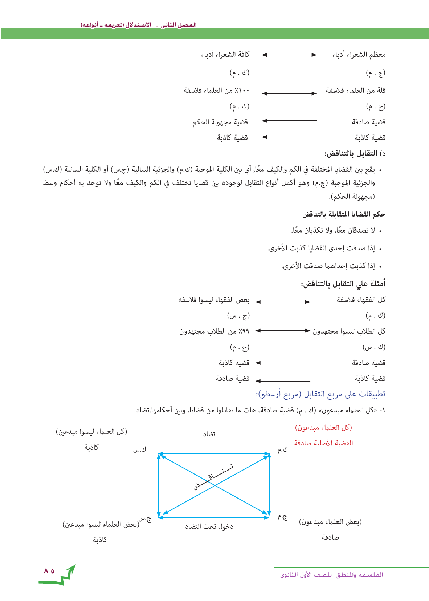
سؤال 6
فلسفة
الترم الأول
فهم
📖 كتاب الوزارة - ترم أول - ص 25–26 (مباحث الفلسفة الأساسية)
يتعرض مبحث الأكسيولوجيا في الفلسفة لدراسة المثل العليا والكشف عن ماهيات حقيقة القيم المطلقة (الحق والخير والجمال)، ويطلق عليه في التصنيف الفلسفي مبحث ________.
✓ مفتاح الحل الصحيح: (ج) القيم المعني بالمثل العليا.
التعليل الفلسفي من صميم الكتاب (ص 25–26): المباحث الرئيسية (الأساسية) للفلسفة ثلاثة: الوجود (الأنطولوجيا)، والمعرفة (الأبستمولوجيا)، والقيم (الأكسيولوجيا). ومبحث القيم «يتعرض لدراسة المثل العليا و الكشف عن ماهيات حقيقة القيم المطلقة التي يسعى الجميع لتحقيقها في حياتهم حيث تظهر في ثلاث قيم»: قيمة الحق، وقيمة الخير، وقيمة الجمال.
سؤال متابعة شفهي للمدرس: "ما القيم الفلسفية الأساسية الثلاث التي تندرج تحت مبحث الأكسيولوجيا؟ والعلوم المقابلة لها؟" (الإجابة من الكتاب ص 26: «قيمة الحق يدرسها (علم المنطق)»، «قيمة الخير يدرسها (علم الأخلاق)»، «قيمة الجمال يدرسها (علم الجمال)» أي الاستطيقا).
📷 لقطة شاشة الصفحتين 25 و 26 من كتاب الوزارة (ترم أول) — مباحث الفلسفة الأساسية ومبحث القيم:
(اضغط على الصورة للتكبير)
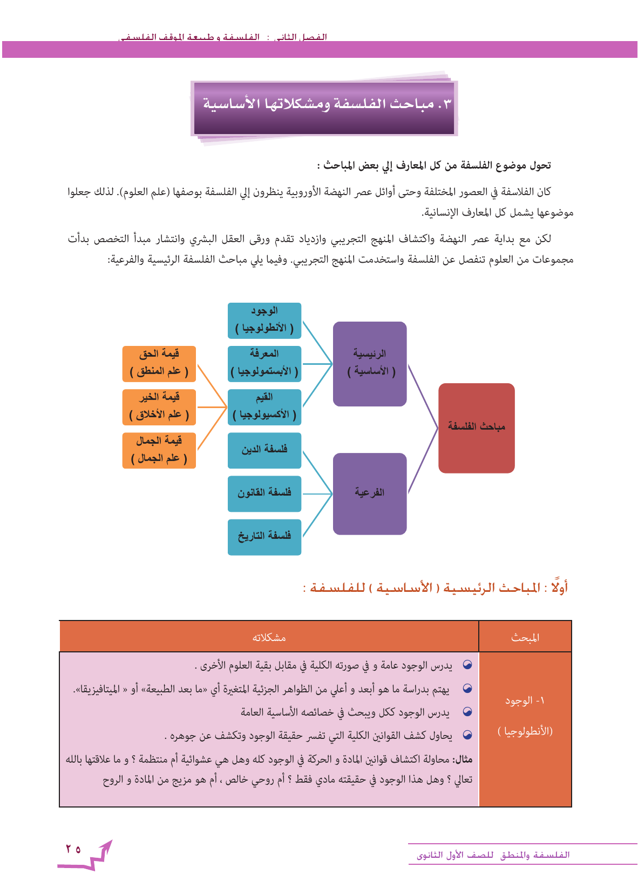
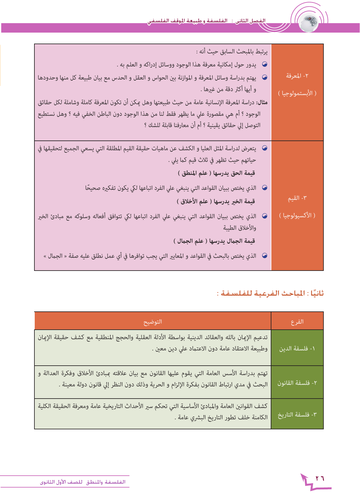
سؤال 7
فلسفة
الترم الأول
فهم
📖 كتاب الوزارة - ترم أول - ص 32 (تطور الموقف الفلسفي عبر العصور)
تميز الموقف الفلسفي في العصر الوسيط بظهور مشكلة لدى الفلاسفة هي محاولة التوفيق بين الفلسفة و________.
✓ مفتاح الحل الصحيح: (ب) الأديان السماوية.
التعليل الفلسفي من صميم الكتاب (ص 32): «في هذا العصر ظهرت مشكلة لدى الفلاسفة وهى التوفيق بين الفلسفة و الأديان السماوية». الفلسفة المسيحية: «الفلسفة هي الطريق إلى الإيمان»، ومثال ذلك: «يذكر أوغسطين أن المسيحيون يتعجبون عندما يعلمون مفاهيم أفلاطون المتعلقة بالإله لأنها تبدو لهم مشابهة لدينهم». فلاسفة الإسلام: «إثبات أن أصل الوجود وطبيعة الإنسان ينتهي إلى الإيمان بالوجود الإلهي وبوحدانية الله»، ومثال ذلك: «محاولة الكندي والفارابي التوفيق بين الفلسفة والدين الإسلامي».
سؤال متابعة شفهي للمدرس: "قارن بين شعار الموقف الفلسفي في العصر اليوناني وشعاره في العصر الحديث كما ورد بالكتاب؟" (من الكتاب ص 32 — اليوناني: «جسد مبدأ سقراط (اعرف نفسك) الموقف الفلسفي في هذا العصر»، والحديث: «دعوة الفلاسفة في مطلع العصر الحديث إلى مناهج علمية جديدة» مثل «دعوة ديكارت إلى تجديد الفكر الإنساني عن طريق الشك من أجل الوصول للحقيقة» و«رفض بيكون الاستقراء الأرسطي ودعا لمنهج علمي جديد قائم على الملاحظة والتجربة»).
📷 لقطة شاشة الصفحة 32 من كتاب الوزارة (ترم أول) — تطور الموقف الفلسفي عبر العصور:
(اضغط على الصورة للتكبير)
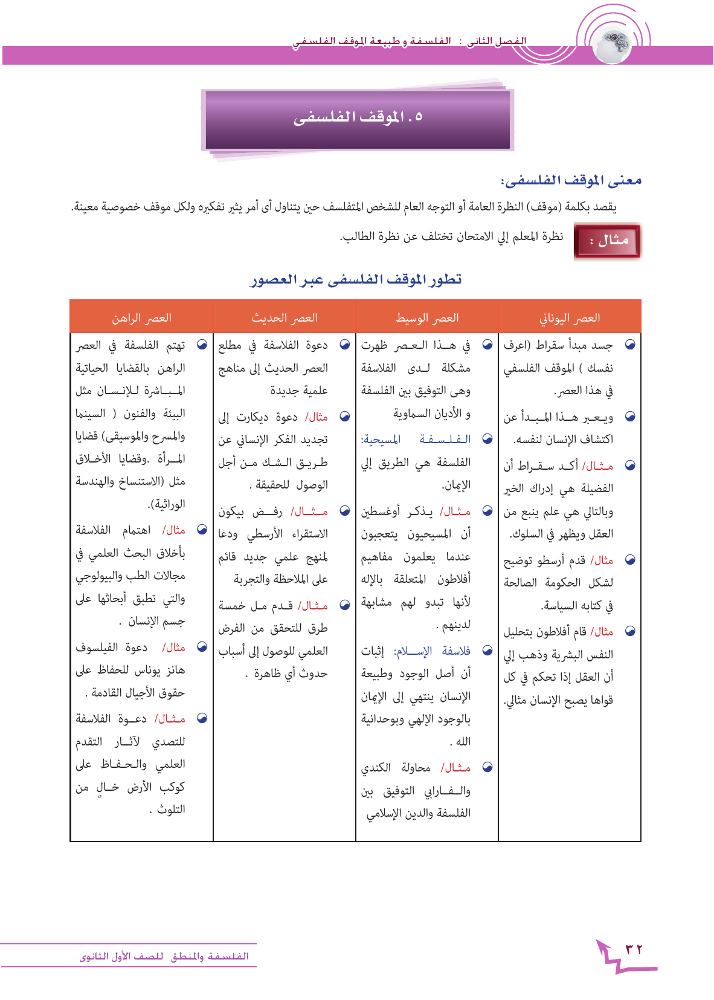
سؤال 8
فلسفة
الترم الثاني
فهم
📖 كتاب الوزارة - ترم ثاني - ص 3 (مراحل علاقة الإنسان بالبيئة)
نظرت مرحلة التفسير والتوظيف في الفكر البيئي للإنسان باعتباره المركز والغاية؛ لأن الطبيعة بكل كائناتها سخرت لأجل ________.
✓ مفتاح الحل الصحيح: (ب) خدمة الإنسان ومنفعته.
التعليل الفلسفي من صميم الكتاب (ص 3): مرحلة التفسير والتوظيف «بدأت مع الحضارة اليونانية وظهور الفلسفات الطبيعية واستمرت في فلسفة العصر الوسيط حيث حاول الفلاسفة تفسير العالم الطبيعي، وفي هذه المرحلة نظر الإنسان لنفسه على أنه الكائن المستخلف على هذه الأرض، وأن الطبيعة بكل ما فيها هيأها الله لخدمة الإنسان وليس ثمة قيمة لأي كائن آخر من كائنات الطبيعة إلا بمدى منفعته للإنسان».
سؤال متابعة شفهي للمدرس: "ما المرحلة التي تحول فيها استغلال الإنسان للطبيعة إلى كارثة بيئية هددت الكائنات الحية والإنسان نفسه؟" (الإجابة من الكتاب ص 3: مرحلة القهر والاستبداد التي «بدأت ... مع التقدم العلمي المبهر الذي أدى إلى قهر الطبيعة وإحداث تحولات حادة في ظواهرها وكائناتها، بل وفي حياة الإنسان نفسه»، وصاحبها «ظهور مشكلات مثل: التصحر والجفاف وظهور الأمراض الفتاكة»).
📷 لقطة شاشة الصفحة 3 من كتاب الوزارة (ترم ثاني) — مراحل علاقة الإنسان بالبيئة:
(اضغط على الصورة للتكبير)
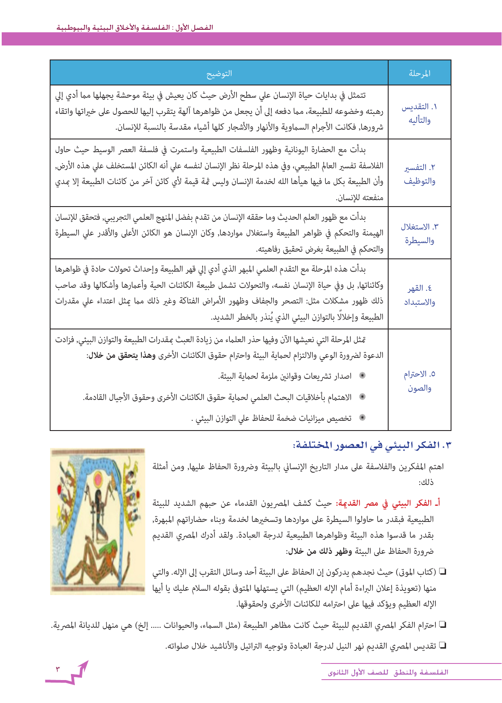
سؤال 9
فلسفة
الترم الثاني
فهم
📖 كتاب الوزارة - ترم ثاني - ص 8 (مجالات البيوتيقا)
أخلاقيات العيادة أحد مجالات الأخلاق البيوطبية، ويحددها «ديفيد روس» بأنها ترتبط بكل ما يواجه الأطباء والفرق الطبية من قرارات ومشكلات أمام سرير المريض أو داخل غرف العمليات أو في العيادة؛ وهي أخلاق ذات أطراف ثلاثة هي ________.
✓ مفتاح الحل الصحيح: (أ) المريض والطبيب والمجتمع.
التعليل الفلسفي من صميم الكتاب (ص 8): أخلاقيات العيادة «توضع حتى يسهل وضع خريطة علاج تقدر وتحترم المريض الذى يثق فى الطبيب والمؤسسة التى يعالج فيها»، و«يحدد هذه الأخلاقيات «ديفيد روس» بقوله: أنها ترتبط بكل ما يواجه الأطباء والفرق الطبية من قرارات ومشكلات أمام سرير المريض، أو داخل غرف العمليات، أو فى العيادة»، و«أخلاق العيادة ذات أطراف ثلاثة (المريض، الطبيب، المجتمع) يتم التشاور بينهم لاتخاذ أكثر القرارات فائدة طبيًا والأكثر أخلاقيًا وتحقيقًا لمصلحة المريض والمجتمع».
سؤال متابعة شفهي للمدرس: "ما الفرق بين أخلاقيات العيادة وأخلاقيات السياسة الصحية؟" (من الكتاب ص 8: أخلاقيات العيادة أطرافها ثلاثة (المريض، الطبيب، المجتمع) وتتعلق بالقرارات أمام سرير المريض وفي غرف العمليات والعيادة، أما أخلاقيات السياسة الصحية فهي «مجموعة من القوانين والخطط تضعها السلطات الطبية لجميع المواطنين دون تمييز» وتتحدد في ثلاث مستويات: الصحة العمومية، منظومة العلاج، توزيع الموارد الصحية).
📷 لقطة شاشة الصفحة 8 من كتاب الوزارة (ترم ثاني) — مجالات الأخلاق البيوطبية:
(اضغط على الصورة للتكبير)
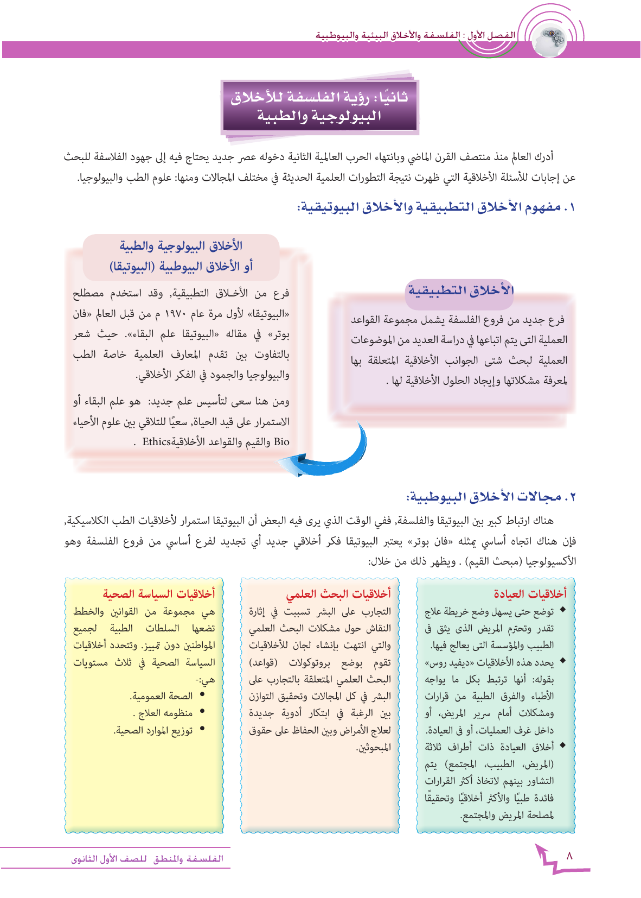
سؤال 10
فلسفة
الترم الثاني
فهم
📖 كتاب الوزارة - ترم ثاني - ص 25 (نظريات الحقيقة)
تفسر النظرية النفعية (المذهب العملي البرجماتي) معيار الحقيقة وصدق الأحكام؛ حيث تقرر أن الحقيقة تتحدد بما تحققه من ________.
✓ مفتاح الحل الصحيح: (ج) منفعة ونتائج متوقعة للإنسان.
التعليل الفلسفي من صميم الكتاب (ص 25): في قيمة «البحث عن الحقيقة» يعرض الكتاب ثلاث نظريات: التطابق: «يرى أصحابها أن الحقيقة تُستمد من الواقع المادي، ويجب أن تطابق ما هو موجود أمام حواسنا، والإدراك الحسي هو الشاهد على صدق الأحكام»؛ والترابط: «يرى أصحابها أن الأحكام التي نصل إليها يجب أن تكون يقينية في صوابها لأنها مستنبطة من أحكام أخرى تلزم عنها وبينهما ترابط منطقي»؛ والنفعية (المذهب العملي البرجماتي): «يرى أصحاب هذا المذهب أن المنفعة وتحقيق النتائج المتوقعة هي معيار الحقيقة وصدق الأحكام، فمعيار الحقيقة هو ما تحققه من نفع للإنسان».
سؤال متابعة شفهي للمدرس: "إذا قال طالب: «مجموع زوايا المثلث 180° ما دام المثلث على سطح مستوٍ»، فأي نظريات الحقيقة يطبق؟" (الإجابة: نظرية الترابط، وهو مثال الكتاب ص 25).
📷 لقطة شاشة الصفحة 25 من كتاب الوزارة (ترم ثاني) — القيم الفلسفية ونظريات الحقيقة:
(اضغط على الصورة للتكبير)
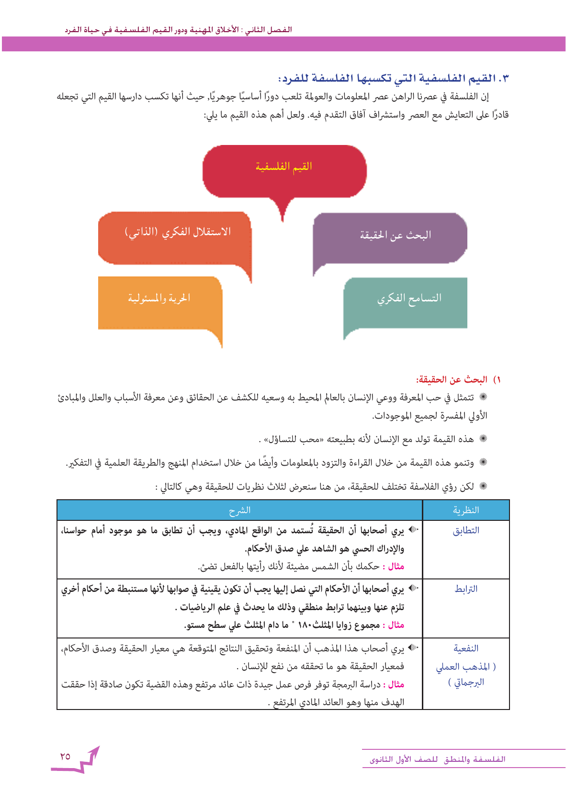
ثانياً: مستوى التطبيق (Application) — [توظيف القواعد في سياقات ومواقف جديدة]
النسبة المستهدفة: 40% (3 منطق + 3 فلسفة)
سؤال 11
منطق
الترم الأول
تطبيق
📖 كتاب الوزارة - ترم أول - ص 60–61 (الكليات الخمس)
في قولنا: "الإنسان رياضي"، تمثل صفة (رياضي) بالنسبة لنوع الإنسان أحد الكليات الخمس وهو ________.
✓ مفتاح الحل الصحيح: (ب) الخاصة كصفة عرضية مميزة.
التعليل المنطقي من صميم الكتاب (ص 60–61): الخاصة «حد كلى يطلق على صفة غير جوهرية وغير أساسية عرضية. تخص بعض أفراد النوع ويمكن تصور النوع بدونها وهي أيضًا تميزهم عن الأنواع الأخرى»، «إذن؛ الخاصة صفة عرضية مميزة» (ص 60، ومثال الكتاب: «مثقف»). وصفة (رياضي) ليست داخلة في ماهيته الجوهرية لكنها تميزه؛ وهو نص أرسطو في أسئلة الكتاب (ص 61 س1): «صفة ليست داخلة في ماهية الشيء ومع ذلك فهي تميز الشيء عن غيره مثل (رياضي) في قولنا الإنسان رياضي».
سؤال متابعة شفهي للمدرس: "كيف تحول نفس هذا المثال إلى (عرض عام)؟" (الإجابة: باختيار صفة شائعة غير مميزة توجد في عدة أنواع، ومثال الكتاب ص 60: «(أبيض اللون): بالنسبة للإنسان، فهذه صفة غير أساسية وغير مميزة فقد توجد في موجودات أخرى حية وغير حية»).
📷 لقطة شاشة الصفحتين 60 و 61 من كتاب الوزارة (ترم أول) — تعريفات الفصل والخاصة والعرض العام، وسؤال (الإنسان رياضي):
(اضغط على الصورة للتكبير)
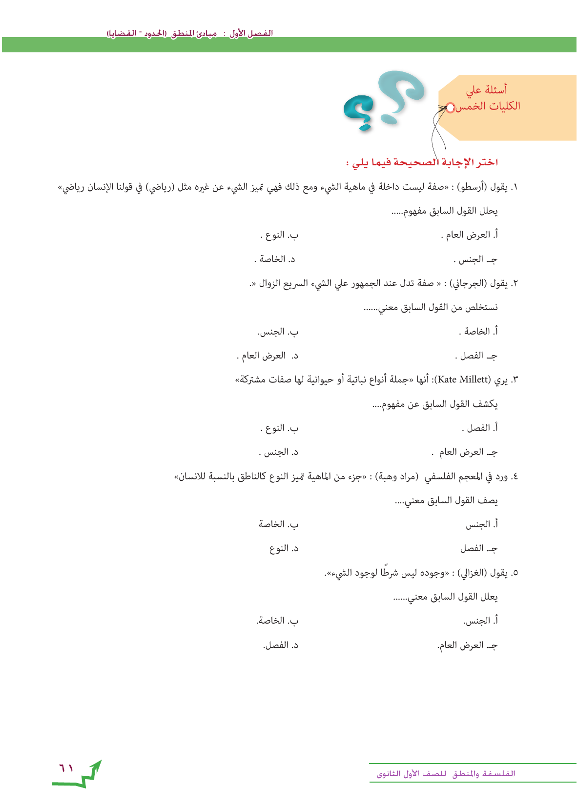
سؤال 12
منطق
الترم الأول
تطبيق
📖 كتاب الوزارة - ترم أول - ص 76 س 47 (الاستغراق في القضايا، والقواعد ص 66–67)
القضية: «ليس كل ما يلمع ذهبًا»، تطبق القواعد المنطقية التي تقرر استغراق حد ________.
✓ مفتاح الحل الصحيح: (أ) المحمول فقط دون الموضوع.
التعليل المنطقي من صميم الكتاب (ص 66–67 و 76): «ليس كل» من أسوار الجزئية السالبة في جدول التقسيم الرباعي (ص 66: «بعض...ليس ـ معظم...ليس ــ ما كل ـ ليس كل ـ ليس بعض»)، فالقضية (جزئية سالبة - ج.س) وتساوي: "بعض ما يلمع ليس ذهباً". و«القضية الكلية تستغرق الموضوع والقضية السالبة تستغرق المحمول» (ص 67)؛ فالجزئية السالبة لا تستغرق موضوعها وتستغرق محمولها فقط. وهو السؤال 47 في ص 76.
سؤال متابعة شفهي للمدرس: "إذا غيرنا الصياغة إلى (كل ما يلمع ليس ذهباً)، فماذا يحدث لكم وكيف واستغراق القضية؟" (الإجابة: تصبح كلية سالبة ك.س، وتستغرق كلا من الموضوع والمحمول).
📷 لقطة شاشة الصفحات 76 و 66 و 67 من كتاب الوزارة (ترم أول) — السؤال 47 «ليس كل ما يلمع ذهبًا»، وأسوار القضايا، وجدول الاستغراق:
(اضغط على الصورة للتكبير)
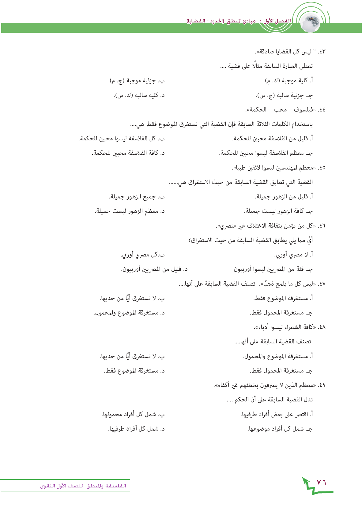
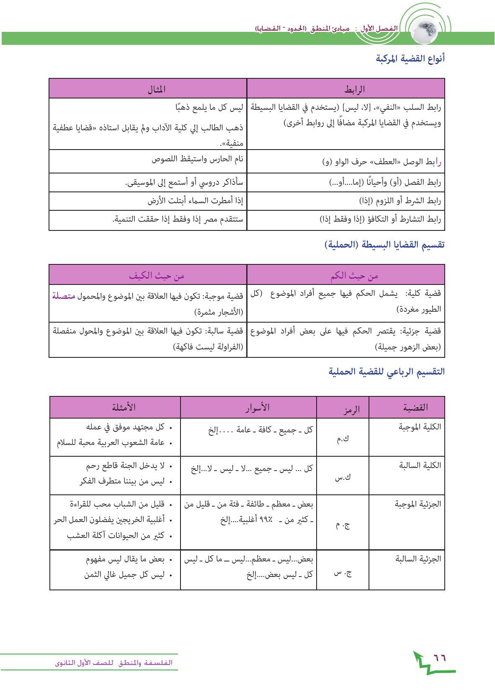
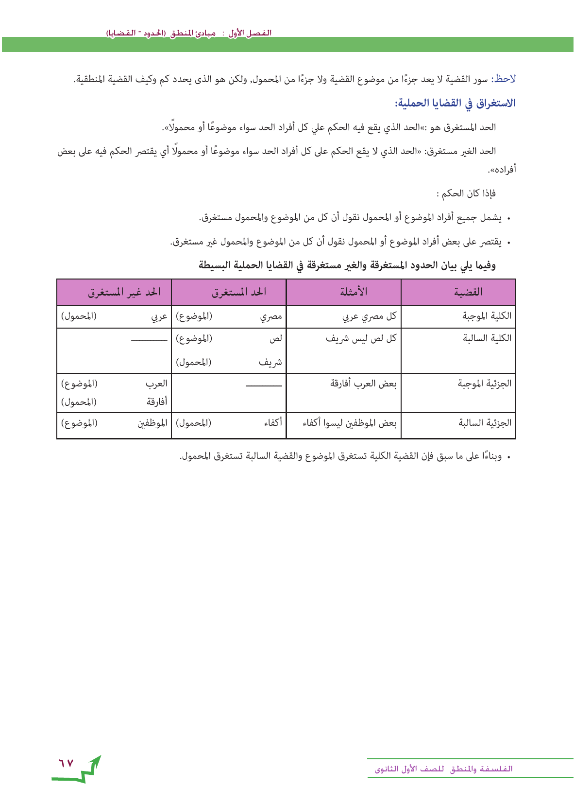
سؤال 13
منطق
الترم الثاني
تطبيق
📖 كتاب الوزارة - ترم ثاني - ص 56 (المنطق غير الرتيب)
اعتماد محركات البحث الإلكترونية على إكمال الكلمات المقترحة قبل استكمال كتابتها، يمثل تطبيقاً لنمط المنطق ________.
✓ مفتاح الحل الصحيح: (ب) غير الرتيب القافز للنتائج.
التعليل المنطقي من صميم الكتاب (ص 56): التفكير غير الرتيب «نتمكن من خلاله من استنتاج بعض النتائج دون حاجة إلى امتلاك معارف كاملة»، و«تتطلب برامج الذكاء الاصطناعي وسائل وأساليب للقفز إلى النتائج مع عدم توافر أدلة كافية»، ومثاله في الكتاب: «خاصية النص التنبؤي في محركات البحث (جوجل) حيث يتنبأ بالكلمة قبل كتابتها كاملة».
سؤال متابعة شفهي للمدرس: "ما الفرق الجوهري بين المنطق غير الرتيب والمنطق الرتيب التقليدي؟" (الإجابة من الكتاب ص 56: المنطق الرتيب «قاطع ورتيب أي ينتقل من مقدمات معينة إلى نتيجة تلزم عن هذه المقدمات»، أما التفكير غير الرتيب فـ«نتمكن من خلاله من استنتاج بعض النتائج دون حاجة إلى امتلاك معارف كاملة»).
📷 لقطة شاشة الصفحة 56 من كتاب الوزارة (ترم ثاني) — المنطق غير الرتيب ومثال النص التنبؤي في جوجل:
(اضغط على الصورة للتكبير)
سؤال 14
فلسفة
سؤال مقالي
الترم الأول
تطبيق
📖 كتاب الوزارة - ترم أول - ص 10 (الفلسفة والعلم: الهدف)
يقرر كتاب الوزارة أن (نيوتن) «يسأل كيف تسقط التفاحة من الشجرة إلى الأرض؟ فتوصل إلى وجود الجاذبية الأرضية»، بينما «لم يكتفِ الفيلسوف بوجود الجاذبية الأرضية والتي اكتفى بها (نيوتن). ونجد الفيلسوف يسأل لماذا توجد جاذبية أرضية؟».
المطلوب المقالي في المقابلة: "دلل بمثالين من عندك يميزان بين تفسير ظاهرة طبيعية (كالبرق أو المطر) بالأسلوب العلمي القائم على العلل القريبة، وتفسيرها بالأسلوب الفلسفي القائم على العلل البعيدة."
✓ نموذج الإجابة وسلم الدرجات المعتمد:
1. مثال الأسلوب العلمي (درجة واحدة): تفسير ظاهرة سقوط المطر بتبخر مياه البحار نتيجة حرارة الشمس وتكثف السحب وبرودتها؛ وهو بحث عن «العلل القريبة - الأسباب المادية - المباشرة» وهو هدف العلم (ص 10).
2. مثال الأسلوب الفلسفي (درجة واحدة): التساؤل حول الغاية الكلية من وجود الماء ودورة الحياة وعلاقة الكائنات بالنظام الكوني الشامل؛ وهو بحث عن «العلل البعيدة - المبادئ الأولى - الأسباب غير المباشرة» وهو هدف الفلسفة (ص 10).
2. مثال الأسلوب الفلسفي (درجة واحدة): التساؤل حول الغاية الكلية من وجود الماء ودورة الحياة وعلاقة الكائنات بالنظام الكوني الشامل؛ وهو بحث عن «العلل البعيدة - المبادئ الأولى - الأسباب غير المباشرة» وهو هدف الفلسفة (ص 10).
معيار تقييم المدرس: هل يستطيع المدرس ضرب أمثلة من عنده واضحة ومباشرة دون تعقيد لفظي؟ وهل يميز بوضوح بين "العلة القريبة" و"العلة البعيدة"؟
📷 لقطة شاشة الصفحة 10 من كتاب الوزارة (ترم أول) — الفلسفة والعلم (الهدف ومثال نيوتن):
(اضغط على الصورة للتكبير)
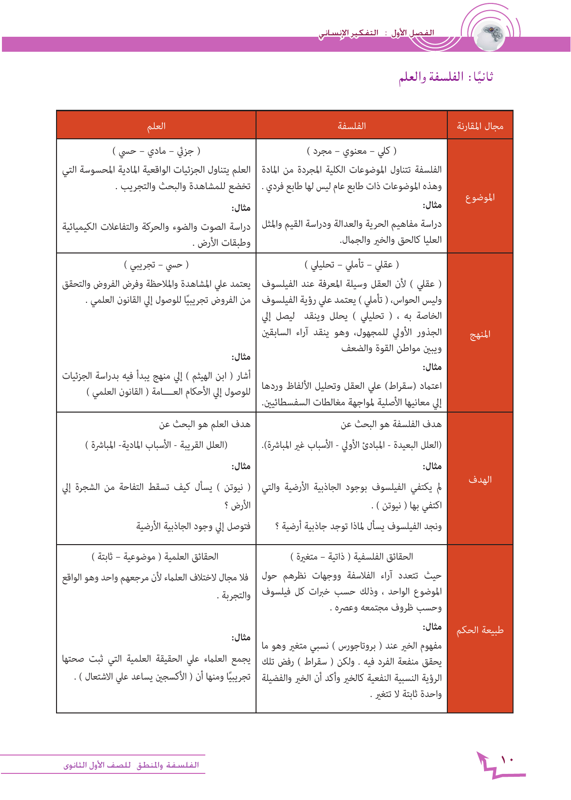
سؤال 15
فلسفة
الترم الثاني
تطبيق
📖 كتاب الوزارة - ترم ثاني - ص 10 (عناصر الموافقة المستنيرة)
إلزام الطبيب بإبلاغ المريض بجميع المخاطر المحتملة للعملية الجراحية دون حجب أي تفاصيل، يمثل تطبيقاً لعنصر ________.
✓ مفتاح الحل الصحيح: (ج) الإفصاح بإخبار المريض بالمعلومات ذات الصلة.
التعليل الفلسفي من صميم الكتاب (ص 10): عناصر الموافقة المستنيرة في الكتاب: الإفصاح: «إخبار المريض المشارك بالمعلومات ذات الصلة بالبحث من قبل الطبيب أو الباحث»؛ الفهم: «وعي المريض وإدراكه للمعلومات التي حصل عليها»؛ الأهلية: «قدرة المريض أو المبحوث على فهم المعلومات المتعلقة بالقرار وعلى إدراك العواقب المترتبة على اتخاذ هذا القرار أو عدم اتخاذه»؛ الطواعية: «حق المريض في اتخاذ القرارات المتعلقة بعلاجه أو مشاركته في الأبحاث الطبية دون أن يتعرض لأي تأثيرات أو ضغوط داخلية أو خارجية»؛ الموافقة: «قبول المريض المشاركة في الأبحاث أو القيام بالعمل الجراحي بناءً على اقتناعه التام بأهمية دوره على أن تكون الموافقة كتابية».
سؤال متابعة شفهي للمدرس: "ما الفرق بين عنصري الإفصاح والفهم؟" (الإفصاح يقوم به الطبيب أو الباحث بإخبار المريض بالمعلومات، بينما الفهم هو «وعي المريض وإدراكه للمعلومات التي حصل عليها»، والكتاب يقرر أن «يؤدي الإفصاح والفهم» إلى مشاركة المريض في القرارات وإقامة علاقة مستمرة تسودها الثقة بين المريض وطبيبه).
📷 لقطة شاشة الصفحة 10 من كتاب الوزارة (ترم ثاني) — عناصر الموافقة المستنيرة:
(اضغط على الصورة للتكبير)
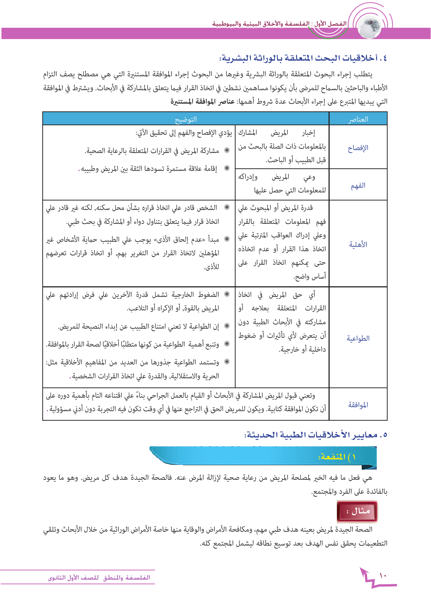
سؤال 16
فلسفة
الترم الثاني
تطبيق
📖 كتاب الوزارة - ترم ثاني - ص 20 إلى 22 (الفلسفة وأخلاقيات المهنة)
حرص موظف في إحدى المؤسسات على إتاحة حق الاطلاع على الوثائق ونشر التقارير الدورية، مع معاملة الجميع ومحاسبتهم على قدم المساواة، يمثل تطبيقاً لقيمة ________ من قيم أخلاق المهنة.
✓ مفتاح الحل الصحيح: (ب) الشفافية والمساواة في المعاملة والمحاسبية.
التعليل الفلسفي من صميم الكتاب (ص 22): «تقوم أخلاق المهنة على جملة من القيم الأخلاقية الخاصة أهمها»: الأمانة والنزاهة، احترام البعد الإنساني، حرية التعبير، الاستقلال الذاتي، الطاعة والمسئولية، تغليب المصلحة العامة، الشفافية والمساواة. وقيمة الشفافية والمساواة نصها: «الشفافية أصبحت قيمة أساسية في كل عمل إداري. وتتمثل في الحق في الاطلاع على الوثائق ونشر التقارير الدورية والمساواة هنا تقتضي النزاهة والحياد، الاعتماد على مبدأ المساواة في المعاملة والمحاسبية».
لماذا لا تصح البدائل؟ الاستقلال الذاتي: «أن يتمتع الموظف بقدر من الاستقلال الذاتي لينتج عنه فكر ابتكاري وإبداعي لحل المشكلات»؛ والطاعة: «تطبيق اللوائح، والقوانين، والقواعد بوعي ودراية»؛ وحرية التعبير: «اعتماد مبدأ حرية التعبير وبخاصة عندما يتعلق الأمر بالبحث عن الحقيقة». ولا يتعلق أي منها بالاطلاع على الوثائق ونشر التقارير.
لماذا لا تصح البدائل؟ الاستقلال الذاتي: «أن يتمتع الموظف بقدر من الاستقلال الذاتي لينتج عنه فكر ابتكاري وإبداعي لحل المشكلات»؛ والطاعة: «تطبيق اللوائح، والقوانين، والقواعد بوعي ودراية»؛ وحرية التعبير: «اعتماد مبدأ حرية التعبير وبخاصة عندما يتعلق الأمر بالبحث عن الحقيقة». ولا يتعلق أي منها بالاطلاع على الوثائق ونشر التقارير.
سؤال متابعة شفهي للمدرس: "ما مفهوم الأخلاق المهنية؟ وما دور الفلسفة في المواثيق الأخلاقية المهنية كما ورد بالكتاب؟" (الإجابة من الكتاب: الأخلاق المهنية من تعريفاتها: «مجموعة القواعد الأخلاقية التي تحكم أفراد المهنة الواحدة وتُستمد من الأخلاق العامة بما تشمله من عادات وقيم وتقاليد وقواعد الأخلاق العامة» ص 20. ودور الفلسفة (ص 21): تحليل الواقع الثقافي واستخلاص القيم الأخلاقية، تحديد الأسس والقواعد المحددة لأداء أعمال المؤسسة، وضع أسس ميثاق أخلاق المهنة كإطار مرجعي للمعايير التي تحكم السلوك «وذلك بمشاركة الفيلسوف والمتخصصين في المهن المختلفة»، ومبادئ الالتزام بالسلوك الإداري والوظيفي داخل المؤسسة).
📷 لقطة شاشة الصفحات 22 و 21 و 20 من كتاب الوزارة (ترم ثاني) — قيم أخلاق المهنة، ودور الفلسفة في المواثيق، ومفهوم الأخلاق المهنية:
(اضغط على الصورة للتكبير)
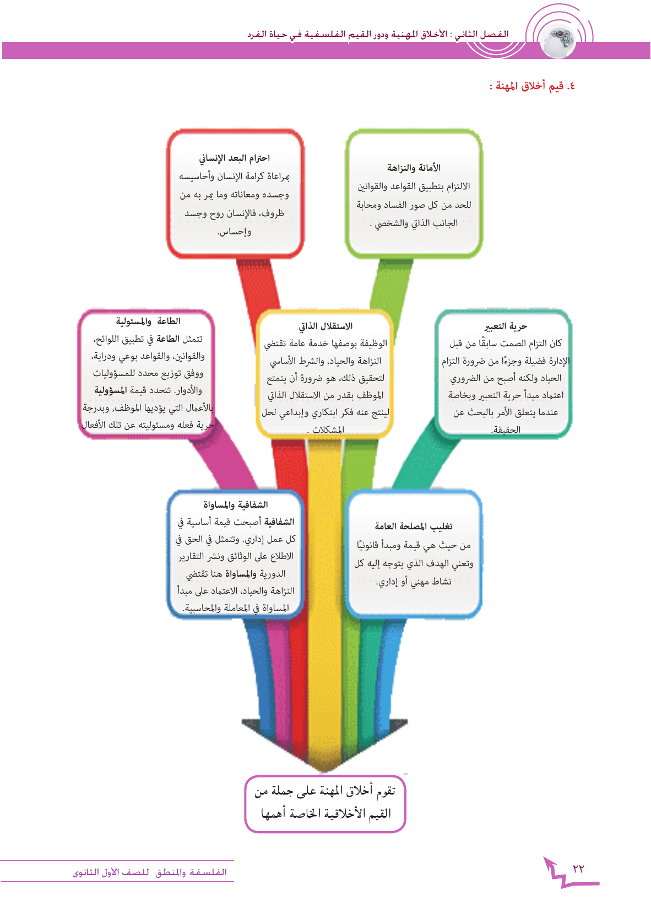
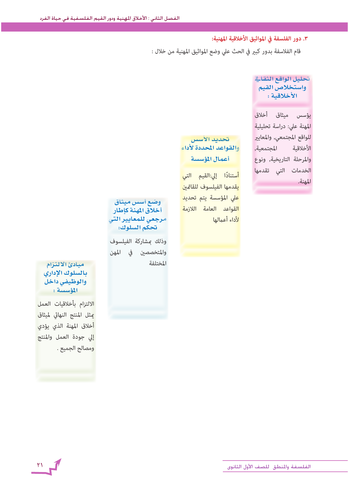
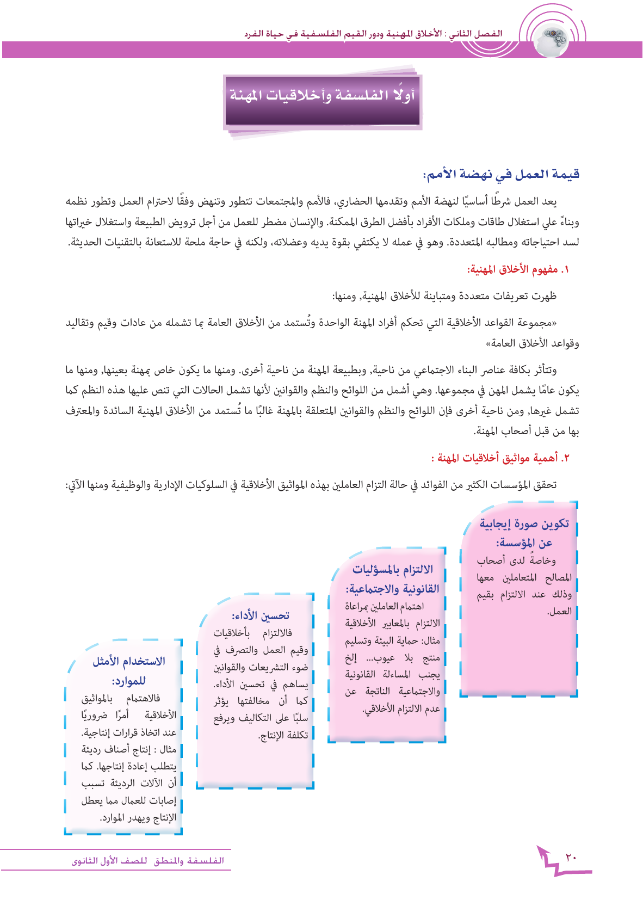
ثالثاً: المستويات العليا (Analysis & Evaluation) — [التحليل، النقد، والبرهان الصوري]
النسبة المستهدفة: 10% (2 منطق + 2 فلسفة)
سؤال 17
منطق
سؤال مقالي
الترم الأول
تحليل صوري
📖 كتاب الوزارة - ترم أول - ص 93 و 94 (الشكل الأول للقياس وضروبه)
تتطلب نظرية القياس الأرسطي شروطاً صارمة في الاستغراق والكيف والتركيب لضمان صحة الانتقال الصوري من المقدمات إلى النتيجة.
المطلوب المقالي في المقابلة:
1) كوّن قياساً صحيحاً من الشكل الأول تتفق مقدمتاه في الكم وتختلفان في الكيف، مع تحديد الحدود المستغرقة في نتيجته.
2) برهن منطقياً: ماذا يترتب على سلب المقدمة الصغرى في الشكل الأول للقياس؟
1) كوّن قياساً صحيحاً من الشكل الأول تتفق مقدمتاه في الكم وتختلفان في الكيف، مع تحديد الحدود المستغرقة في نتيجته.
2) برهن منطقياً: ماذا يترتب على سلب المقدمة الصغرى في الشكل الأول للقياس؟
✓ نموذج الإجابة وسلم الدرجات المعتمد:
1. تكوين القياس (درجة ونصف):
* الكبرى: كلية سالبة (ك.س) -> "كل الطيور ليست ثدييات"
* الصغرى: كلية موجبة (ك.م) -> "كل النسور طيور"
* النتيجة: كلية سالبة (ك.س) -> "كل النسور ليست ثدييات"
* الحدود المستغرقة في النتيجة: تستغرق كلا الحدين (الموضوع "النسور" والمحمول "ثدييات")؛ لأن «القضية الكلية تستغرق الموضوع والقضية السالبة تستغرق المحمول» (ص 67). وهذا هو الضرب الثاني من ضروب الشكل الأول (ك.س + ك.م ← ك.س) في ص 94، ومثال الكتاب: «كل المحترفين ليسوا هواة / كل المتعاقدين محترفين / كل المتعاقدين ليسوا هواة».
2. البرهان على اشتراط إيجاب الصغرى (درجة ونصف):
* بنص الكتاب (ص 93): «لأنه إذا كانت المقدمة الصغرى سالبة ستكون النتيجة سالبة، وبالتالي تستغرق محمولها الذي يكون محمولاً للمقدمة الكبرى وهذا المحمول لا يستغرق في المقدمة الكبرى إلا إذا كانت سالبة وهذا لا يجوز لأنه لا إنتاج من سالبتين (قواعد القياس)».
* النتيجة السالبة تستغرق محمولها (الحد الأكبر). ولكي يكون الحد الأكبر مستغرقاً في مقدمته الكبرى، يجب أن تكون الكبرى سالبة، وهنا نقع في مغالطة (الإنتاج من سالبتين) وهو باطل في القياس.
* وإذا كانت الكبرى موجبة، وقعنا في مغالطة (استغراق حد في النتيجة وهو غير مستغرق في مقدمته). إذن يجب أن تكون الصغرى موجبة دائماً في الشكل الأول.
* الكبرى: كلية سالبة (ك.س) -> "كل الطيور ليست ثدييات"
* الصغرى: كلية موجبة (ك.م) -> "كل النسور طيور"
* النتيجة: كلية سالبة (ك.س) -> "كل النسور ليست ثدييات"
* الحدود المستغرقة في النتيجة: تستغرق كلا الحدين (الموضوع "النسور" والمحمول "ثدييات")؛ لأن «القضية الكلية تستغرق الموضوع والقضية السالبة تستغرق المحمول» (ص 67). وهذا هو الضرب الثاني من ضروب الشكل الأول (ك.س + ك.م ← ك.س) في ص 94، ومثال الكتاب: «كل المحترفين ليسوا هواة / كل المتعاقدين محترفين / كل المتعاقدين ليسوا هواة».
2. البرهان على اشتراط إيجاب الصغرى (درجة ونصف):
* بنص الكتاب (ص 93): «لأنه إذا كانت المقدمة الصغرى سالبة ستكون النتيجة سالبة، وبالتالي تستغرق محمولها الذي يكون محمولاً للمقدمة الكبرى وهذا المحمول لا يستغرق في المقدمة الكبرى إلا إذا كانت سالبة وهذا لا يجوز لأنه لا إنتاج من سالبتين (قواعد القياس)».
* النتيجة السالبة تستغرق محمولها (الحد الأكبر). ولكي يكون الحد الأكبر مستغرقاً في مقدمته الكبرى، يجب أن تكون الكبرى سالبة، وهنا نقع في مغالطة (الإنتاج من سالبتين) وهو باطل في القياس.
* وإذا كانت الكبرى موجبة، وقعنا في مغالطة (استغراق حد في النتيجة وهو غير مستغرق في مقدمته). إذن يجب أن تكون الصغرى موجبة دائماً في الشكل الأول.
معيار تميز المدرس: المعلم الخبير سيستحضر فوراً الضرب الثاني من ضروب الشكل الأول (ك.س + ك.م ← ك.س، ص 94) ويثبت شرط «إيجاب المقدمة الصغرى» (ص 93) خطوة بخطوة دون تلعثم.
📷 لقطة شاشة الصفحتين 93 و 94 من كتاب الوزارة (ترم أول) — شرطا الشكل الأول، وضروبه، ونقد ابن تيمية:
(اضغط على الصورة للتكبير)
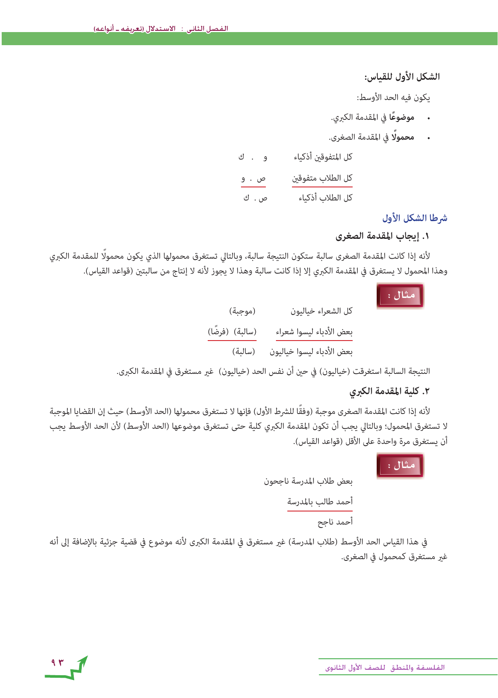
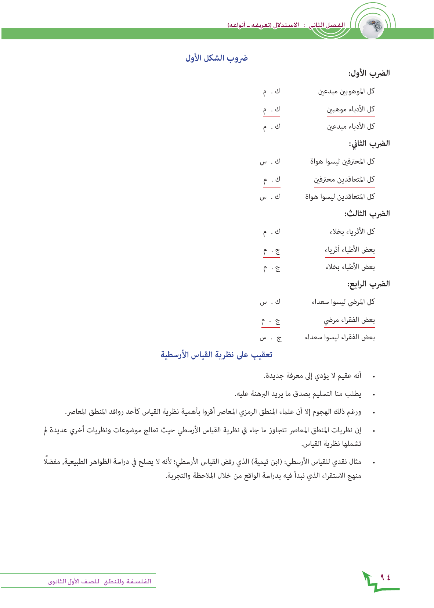
سؤال 18
منطق
سؤال مقالي
الترم الثاني
نقد استقرائي
📖 كتاب الوزارة - ترم ثاني - ص 37–38 و 42–43 (منهج بيكون والمنهج المعاصر)
أدرك «فرانسيس بيكون» الحاجة إلى «منهج جديد أو أداة جديدة للكشف والاختراع يحل محل منهج «أرسطو» القديم»، وقدم في الجانب الإيجابي من منهجه ثلاث قوائم (الحضور، والغياب، والتفاوت في الدرجة).
المطلوب المقالي في المقابلة: "حلل موقع (الفرض) في خطوات الجانب الإيجابي عند بيكون وفي الاستقراء الحديث (التقليدي)، ثم بيّن كيف تغيّرت مكانة الفرض في المنهج العلمي المعاصر ولماذا."
✓ نموذج الإجابة وسلم الدرجات المعتمد:
1. موقع الفرض عند بيكون والاستقراء الحديث (درجة ونصف):
* خطوات الجانب الإيجابي عند بيكون (ص 38): «١. الملاحظة وجمع المعلومات. ٢. ترتيب المعلومات في ثلاث قوائم ... ٣. تحليل البيانات الواردة بالقوائم الثلاثة. ٤. تفسير الظاهرة (الوصول إلى القانون)»؛ فلا يرد الفرض فيها خطوةً مستقلة.
* وفي الاستقراء الحديث (التقليدي) (ص 42): «الفرض ليس له أولوية، فهو خطوة لاحقة للملاحظة العلمية»، و«مصدر الفرض الملاحظات المباشرة التي يقوم بها الباحث»، و«الفرض مادي يشير إلى كيانات واقعية محسوسة»، و«التحقق من الفرض يتم بطريقة مباشرة من خلال إخضاعه للتجربة».
2. مكانة الفرض في المنهج المعاصر وسببها (درجة ونصف):
* السبب (ص 42): «لم يعد الاستقراء العلمي الحديث (التقليدي) كافيًا لمسايرة متطلبات البحث العلمي المعقد خاصة مع تطور العلوم الطبيعة في القرن الأخير ودراسة ظواهر مثل الذرة وحركة الإلكترون التي يستحيل ملاحظتها».
* في المنهج المعاصر: «الفرض له أولوية ويعد خطوة أولى؛ لذلك يعرف هذا المنهج بـ «المنهج الفرضي»»، و«مصدره فروض وقوانين ونظريات سابقة»، و«الفرض صوري يشير إلى كيانات واقعية لا تخضع للإدراك الحسي مثل: الضغط الجوي والإلكترونات، الفيروسات»، و«التحقق من الفرض يتم بطريقة غير مباشرة من خلال إخضاع النتائج اللازمة عن الفرض للتجربة».
* ويؤكد الكتاب (ص 43 س1): «الفرض العلمي لا يمكن الوصول إليه بطريقة آلية عن طريق الملاحظات وحدها، ولكن هو عملية خلق وإبداع يأتي من تفاعل الذكاء الإنساني مع الحصيلة المعرفية».
* خطوات الجانب الإيجابي عند بيكون (ص 38): «١. الملاحظة وجمع المعلومات. ٢. ترتيب المعلومات في ثلاث قوائم ... ٣. تحليل البيانات الواردة بالقوائم الثلاثة. ٤. تفسير الظاهرة (الوصول إلى القانون)»؛ فلا يرد الفرض فيها خطوةً مستقلة.
* وفي الاستقراء الحديث (التقليدي) (ص 42): «الفرض ليس له أولوية، فهو خطوة لاحقة للملاحظة العلمية»، و«مصدر الفرض الملاحظات المباشرة التي يقوم بها الباحث»، و«الفرض مادي يشير إلى كيانات واقعية محسوسة»، و«التحقق من الفرض يتم بطريقة مباشرة من خلال إخضاعه للتجربة».
2. مكانة الفرض في المنهج المعاصر وسببها (درجة ونصف):
* السبب (ص 42): «لم يعد الاستقراء العلمي الحديث (التقليدي) كافيًا لمسايرة متطلبات البحث العلمي المعقد خاصة مع تطور العلوم الطبيعة في القرن الأخير ودراسة ظواهر مثل الذرة وحركة الإلكترون التي يستحيل ملاحظتها».
* في المنهج المعاصر: «الفرض له أولوية ويعد خطوة أولى؛ لذلك يعرف هذا المنهج بـ «المنهج الفرضي»»، و«مصدره فروض وقوانين ونظريات سابقة»، و«الفرض صوري يشير إلى كيانات واقعية لا تخضع للإدراك الحسي مثل: الضغط الجوي والإلكترونات، الفيروسات»، و«التحقق من الفرض يتم بطريقة غير مباشرة من خلال إخضاع النتائج اللازمة عن الفرض للتجربة».
* ويؤكد الكتاب (ص 43 س1): «الفرض العلمي لا يمكن الوصول إليه بطريقة آلية عن طريق الملاحظات وحدها، ولكن هو عملية خلق وإبداع يأتي من تفاعل الذكاء الإنساني مع الحصيلة المعرفية».
معيار تميز المدرس: هل يميّز المدرس بدقة بين مكانة الفرض في الاستقراء الحديث (خطوة لاحقة للملاحظة) وفي المنهج المعاصر الذي «يجمع بين الاستقراء والاستنباط» ويُعرف بـ«المنهج الفرضي» (ص 42)؟
📷 لقطة شاشة الصفحات 37 و 38 و 42 و 43 من كتاب الوزارة (ترم ثاني) — الجانب السلبي والإيجابي عند بيكون، والاستقراء والمنهج العلمي المعاصر:
(اضغط على الصورة للتكبير)
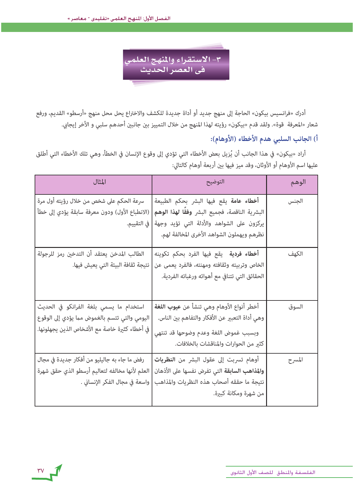
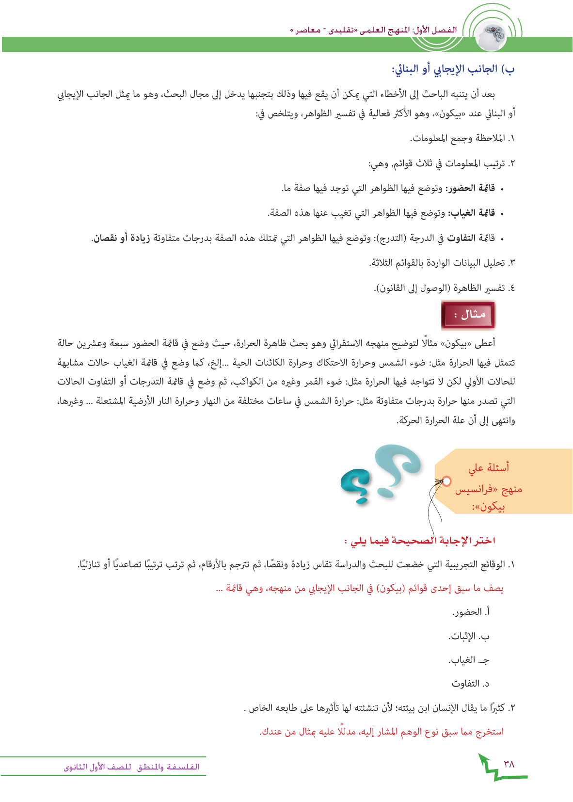
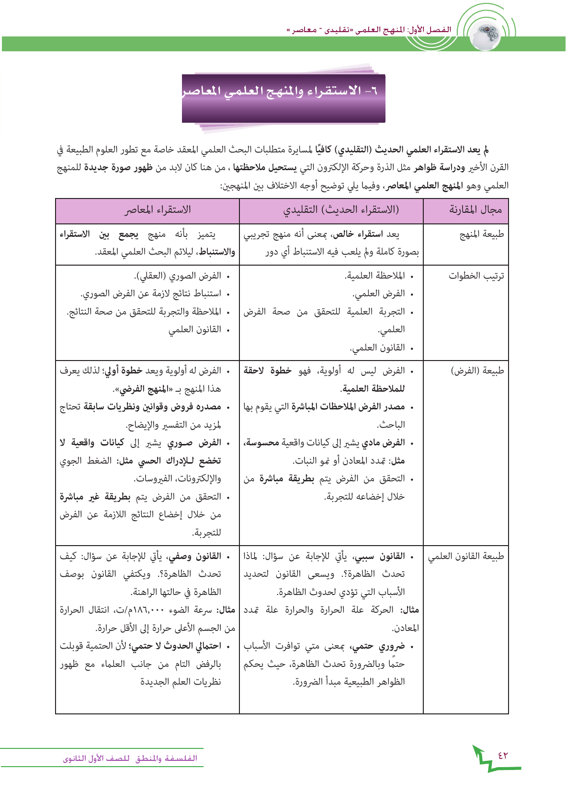
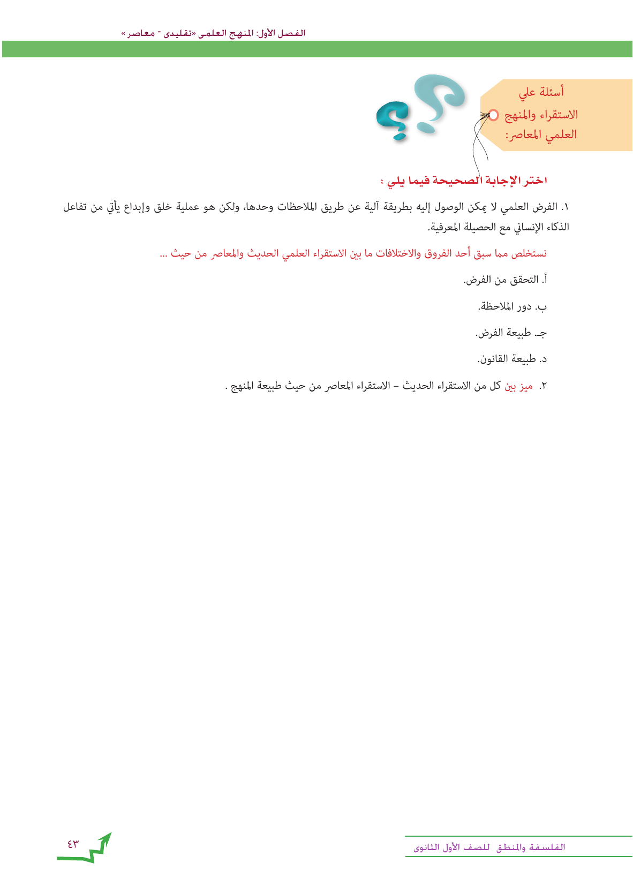
سؤال 19
فلسفة
الترم الأول
تحليل
📖 كتاب الوزارة - ترم أول - ص 34 (تحديات الموقف الفلسفي)
تمسك بعض الأفراد بعادات مترسخة عبر الأجيال وتقليدها تقليداً أعمى دون إعادة النظر فيها رغم ثبوت خطئها، يبرهن على الوقوع في فخ ________.
✓ مفتاح الحل الصحيح: (أ) الخضوع للمألوف والمعتاد المعطل للتفلسف.
التحليل الفلسفي من صميم الكتاب (ص 34): تحديات الموقف الفلسفي أربعة: (١) الخضوع للمألوف والمعتاد: «يقوم الموقف الفلسفي على حرية التعبير عن الرأي وعلى إعادة النظر في كل ما هو متعارف عليه واكتشاف الجديد باستمرار وعدم الخضوع للتقليد الأعمى»، ومن أمثلته: «الخضوع لعادة الأخذ بالثأر في بعض القرى لترسيخها عبر الأجيال». (٢) الخضوع للسلطات: «يتسم العقل الخاضع للسلطة بأنه أعمى. ويفقد صاحبه القدرة على الاستقلال». (٣) النظرة الأحادية للأمور: «والتي تؤدى إلى غياب الروح النقدية والقبول للمعتاد والتسليم لليقين المسبق والجاهز». (٤) الافتقار إلى الشجاعة الفكرية. أما «التسرع في الحكم والقفز إلى نتائج دون مقدمات كافية» فهو ليس من التحديات بل نقيض خاصية «الصبر والتروي» (ص 33).
سؤال متابعة شفهي للمدرس: "كيف يرتبط تحدي (الخضوع للسلطات) في الفلسفة بـ (عامل الهيمنة) في عوامل الوقوع في أخطاء التفكير بالمنطق؟" (المعلم المتميز سيربط فوراً بين المبحثين: الهيمنة في الكتاب (ترم أول ص 50) «تتمثل في تقبل رأي شخص له نفوذ وتأثير عليك»، والعقل الخاضع للسلطة «يفقد صاحبه القدرة على الاستقلال» ص 34).
📷 لقطة شاشة الصفحة 34 من كتاب الوزارة (ترم أول) — تحديات الموقف الفلسفي:
(اضغط على الصورة للتكبير)
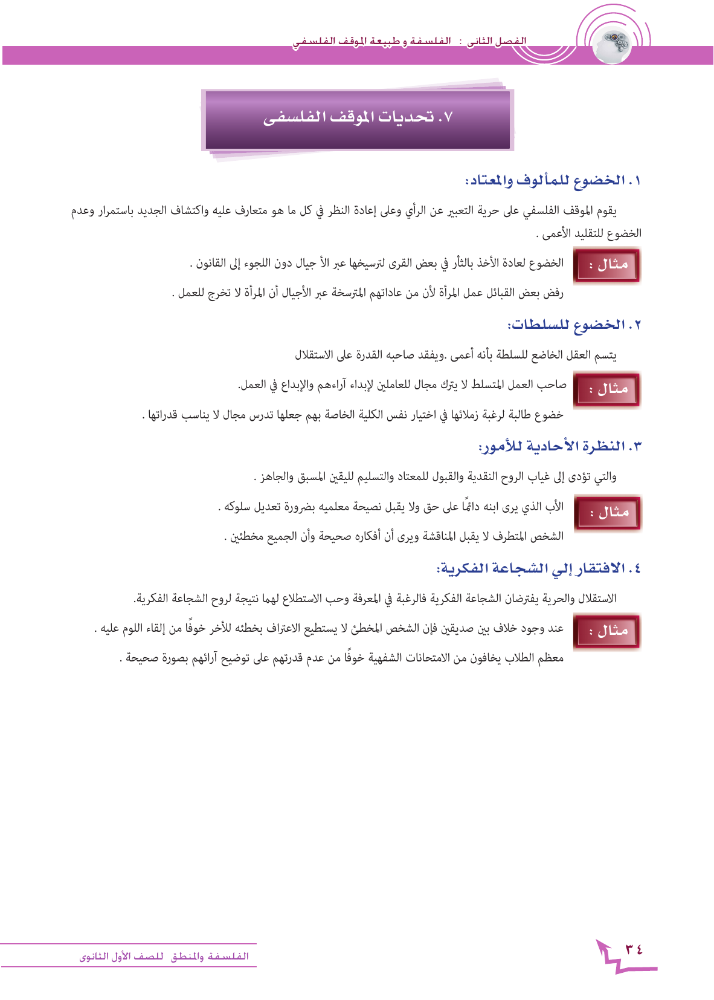
سؤال 20
فلسفة
سؤال مقالي
الترم الثاني
نقد فلسفي
📖 كتاب الوزارة - ترم ثاني - ص 4 (أخلاق الأرض لألدو ليوبولد)
ذهب (ألدو ليوبولد) إلى «أن جذور الأزمة البيئية هي جذور فلسفية»، وطالب بأخلاق للأرض تغيّر نظرة الإنسان الذي اعتبر نفسه سيداً للأرض.
المطلوب المقالي في المقابلة: "استخلص التحول الجذري الذي طالبت به (أخلاق الأرض) عند ليوبولد بشأن دور الإنسان في كوكب الأرض، مبيناً كيف يساهم هذا التحول في حماية النظام البيئي."
✓ نموذج الإجابة وسلم الدرجات المعتمد:
1. التحول الجذري في دور الإنسان (درجة ونصف):
* بنص الكتاب (ص 4): «أكد على ضرورة تحول دور الإنسان العاقل من مستعمر لمجتمع الأرض إلى مواطن فيها عليه احترام الأعضاء الزملاء له، فهو ليس سيد الأرض، بل هي موطنه وهو أحد مواطنيها».
2. أثر هذا التحول على حماية النظام البيئي (درجة ونصف):
* «وطالب بضرورة أن تشمل أخلاق الأرض العناصر الطبيعية كلها كي تضم التربة والمياه والنباتات والحيوانات أو إجمالاً الأرض بشكل أعم» (ص 4)؛ فيصبح الإنسان مطالَباً باحترام الأعضاء الزملاء له في مجتمع الأرض بدلاً من التعامل معها كمستعمر.
* بنص الكتاب (ص 4): «أكد على ضرورة تحول دور الإنسان العاقل من مستعمر لمجتمع الأرض إلى مواطن فيها عليه احترام الأعضاء الزملاء له، فهو ليس سيد الأرض، بل هي موطنه وهو أحد مواطنيها».
2. أثر هذا التحول على حماية النظام البيئي (درجة ونصف):
* «وطالب بضرورة أن تشمل أخلاق الأرض العناصر الطبيعية كلها كي تضم التربة والمياه والنباتات والحيوانات أو إجمالاً الأرض بشكل أعم» (ص 4)؛ فيصبح الإنسان مطالَباً باحترام الأعضاء الزملاء له في مجتمع الأرض بدلاً من التعامل معها كمستعمر.
معيار تميز المدرس: هل يستحضر المدرس نص الكتاب: «تحول دور الإنسان العاقل من مستعمر لمجتمع الأرض إلى مواطن فيها»، وأن أخلاق الأرض تضم «التربة والمياه والنباتات والحيوانات أو إجمالاً الأرض بشكل أعم»؟
📷 لقطة شاشة الصفحة 4 من كتاب الوزارة (ترم ثاني) — الفكر البيئي عند الغربيين: ألدو ليوبولد وأخلاق الأرض:
(اضغط على الصورة للتكبير)
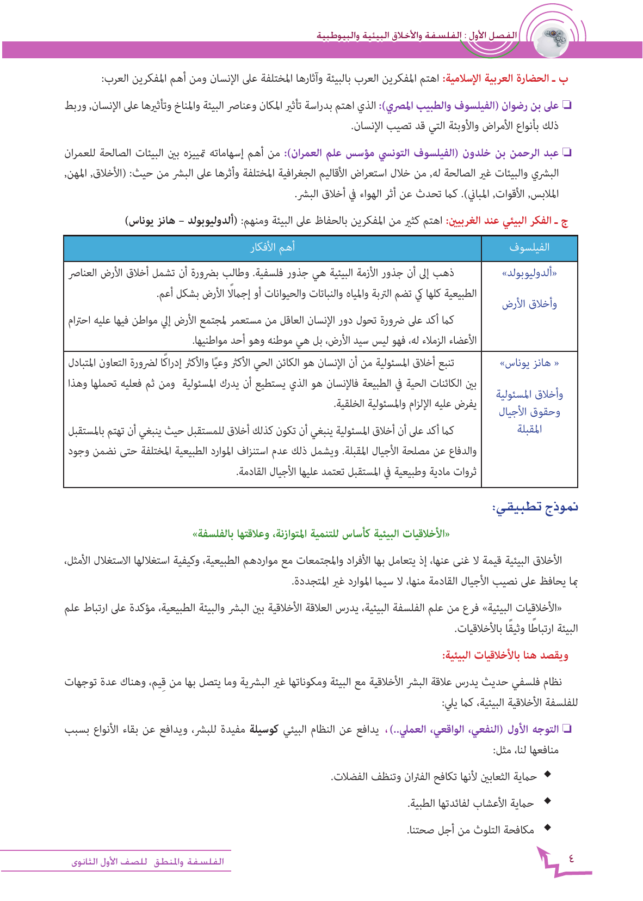